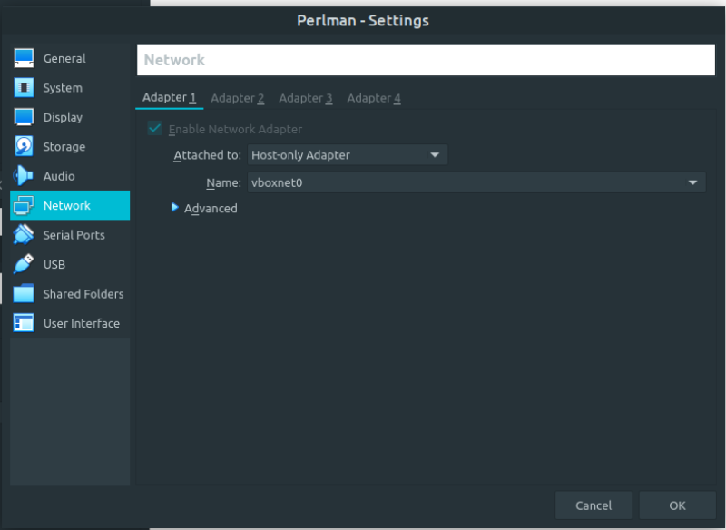
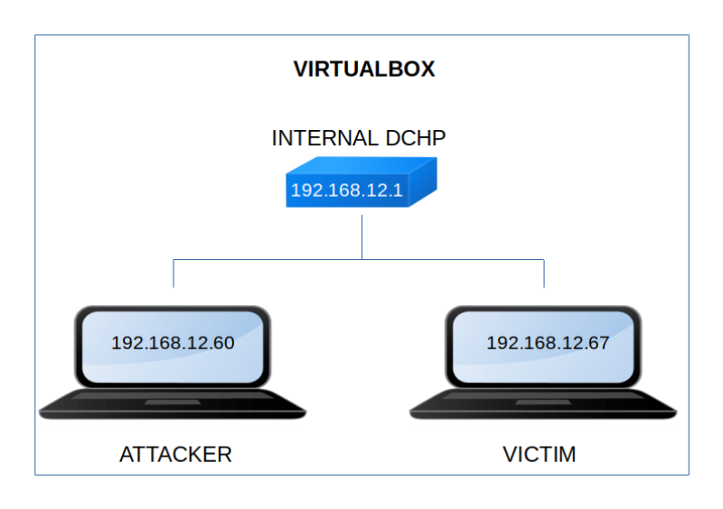

Perlman
▸ Perlman
▸ 2. Finding Services and Ports
▸ 4.2 Get .git repository information
▸ 5.1 pspy2 – Unprivileged Linux Process Snooping
▸ 5.2 Get access as "milow" user.
▸ 5.6 Get access as "ze_perlman" (First flag)
Difficulty: High.
Flag: 2 flags.
Learning:
• Reconnaissance
Scan Network
Find services
• Enumerate
• Exploitation
Nnp create group
Get .git repository
Send email
Wordpress
Search exploit
Metasploit
Connect via SSH
• Privilege Escalation
pspy32
Get access as user
See sudoers
Modify file
Get access as user
Get root
• Download (Mirror): https://downloads.hackmyvm.eu/perlman.zip
Install the machine on VirtualBox:
1. Download the file and extract it.
2. On Virtualbox choose File->Import Appliance.
3. Select the file “ova”.
4. Accept to import.


Watch your Machine IP.
$ ifconfig
Output:

Diagram
